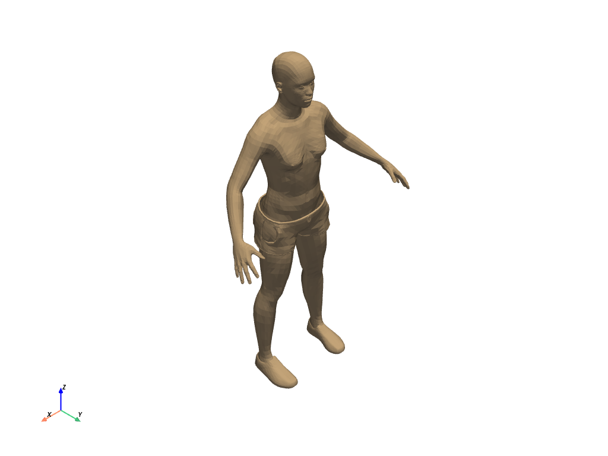

pyvista.get_reader#
- get_reader(filename, force_ext=None)[ソース]#
データファイルの読み取りをきめ細かく制御するためのリーダーを返します．
対応するファイルタイプとリーダー
ファイル拡張子
クラス
.bmp.cas.case.cgns.dat.dcm.dem.facet.foam.g.gif.glb.gltf.hdf.img.inp.jpg.jpeg.hdr.mha.mhd.nii.nii.gz.nhdr.nrrd.obj.p3d.ply.png.pnm.pts.pvd.pvti.pvtk.pvtr.pvtu.res.segy.sgy.slc.stl.tif.tiff.tri.vti.vtk.vtm.vtmb.vtp.vtr.vts.vtu.xdmf- パラメータ:
- 戻り値:
pyvista.BaseReaderファイルタイプに応じて，
pyvista.BaseReaderのサブクラスが返されます．
例
>>> import pyvista >>> from pyvista import examples >>> filename = examples.download_human(load=False) >>> filename.split("/")[-1] # omit the path 'Human.vtp' >>> reader = pyvista.get_reader(filename) >>> reader XMLPolyDataReader('.../Human.vtp') >>> mesh = reader.read() >>> mesh PolyData ... >>> mesh.plot(color='lightblue')
